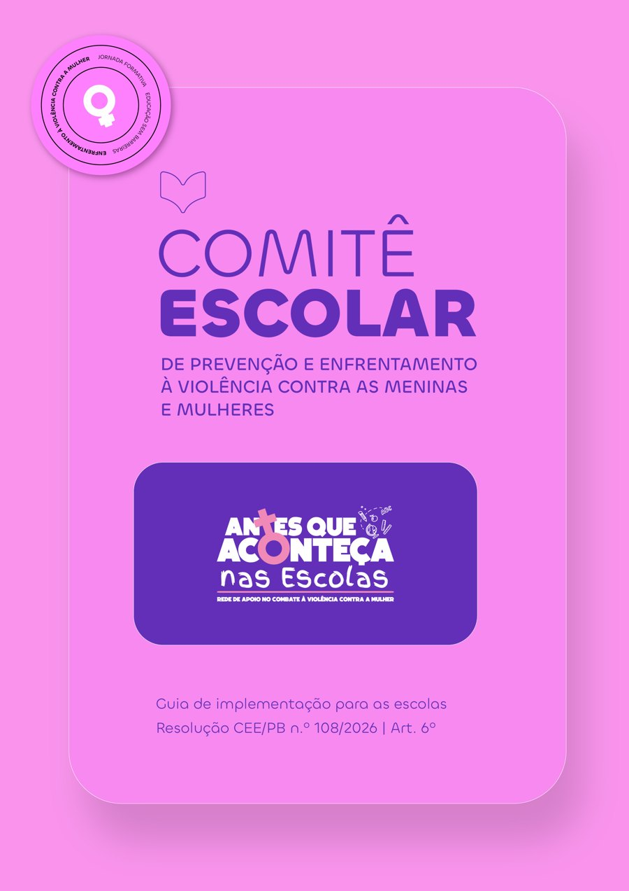
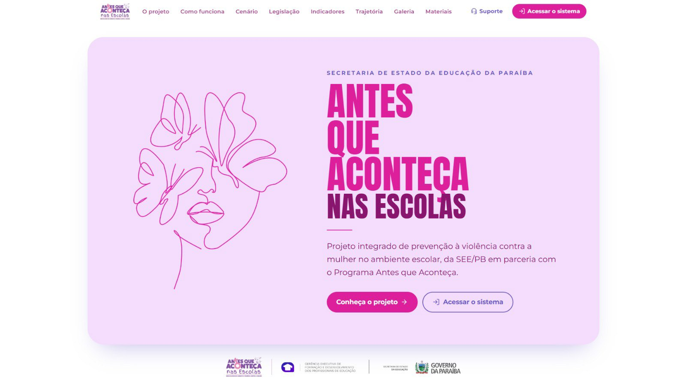
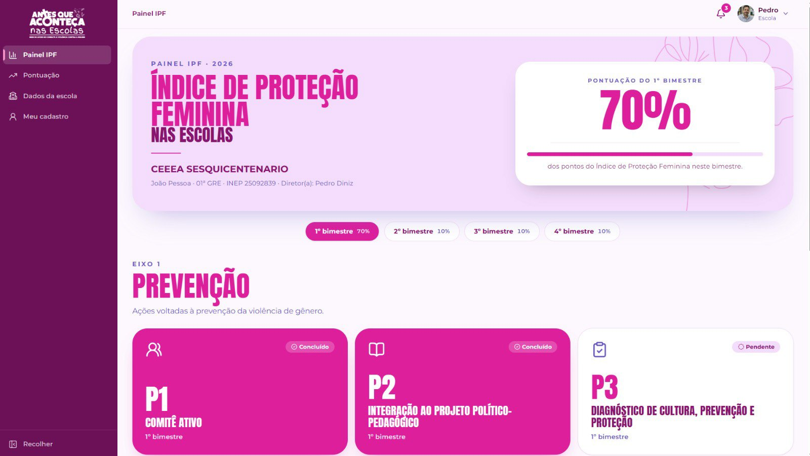
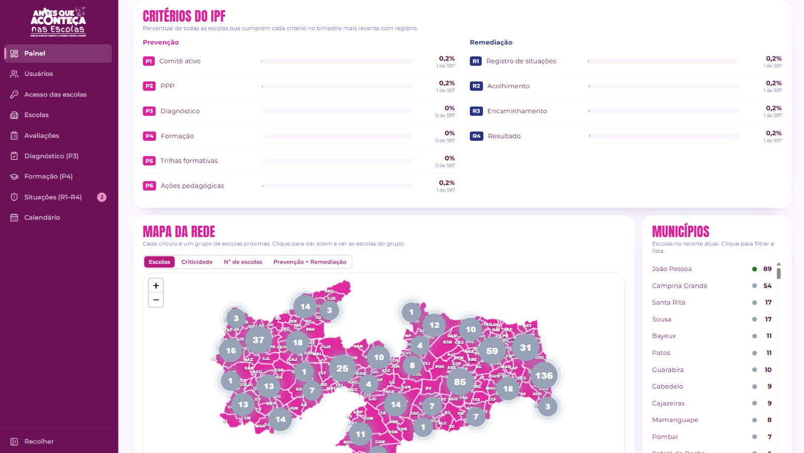

Ações realizadas · etapa atual · 2027

Ações realizadas
e etapa atual
1✓ REALIZADA
Reunião de apresentação do programa às GREs
2✓ REALIZADA
Envio dos documentos orientadores às GREs
3✓ REALIZADA
Indicação dos representantes estaduais nas GREs
4✓ REALIZADA
Orientações para a constituição dos comitês escolares de prevenção e enfrentamento à violência contra a mulher
5● ETAPA ATUAL
Situação da implementação dos comitês nas escolas
Etapa 4 · Orientações
Comitê escolar de
prevenção e
enfrentamento
Cada escola constitui o seu comitê para prevenir e enfrentar a violência contra meninas e mulheres, seguindo o guia de implementação enviado às GREs.

Comitês
formados
Comitês formados × escolas, por GRE
290comitês
no total
no total
EM DESTAQUE
16 GREs
4 GREs com 100% das escolas
100% das escolasem implementação· toque em uma GRE para ver o detalhe
Novidade
Sistema de
monitoramento
Plataforma digital integrada para registro, acompanhamento e avaliação das ações de prevenção e enfrentamento à violência contra meninas e mulheres nas escolas da Paraíba.

Principais funcionalidades

Painel da escola: Índice de Proteção Feminina (IPF) com os eixos de Prevenção.
Monitoramento e
inteligência de dados

Planejamento
para 2027
As ações do projeto acontecem ao longo de todo o ano letivo, com iniciativas contínuas de prevenção e enfrentamento à violência contra meninas e mulheres, além das ações estratégicas do planejamento anual.
Cronograma de ações
Ações estratégicas previstas para o ano letivo
Jan
Fev
Mar
Formação do Transforma Educação PB
Semana Escolar de Combate à Violência contra a Mulher
Lei Federal nº 14.164/2021
Abr
Mai
Jun
Jul
Ago
Ações do Agosto Lilás
Set
Out
Semana Escolar de Combate à Violência contra a Mulher
Lei Estadual nº 12.874/2023
Jornada Formativa Educação Sem Barreiras
Enfrentamento à violência contra meninas e mulheres
Nov
Dez
Encaminhamentos
Próximos passos
1Encontro presencial com as GREspara orientação sobre o uso do sistema→
2Orientação às escolaspelas GREs→
3Liberação dos acessos ao sistemapara as equipes e início do monitoramentoINÍCIO DO MONITORAMENTO
Formar para transformar